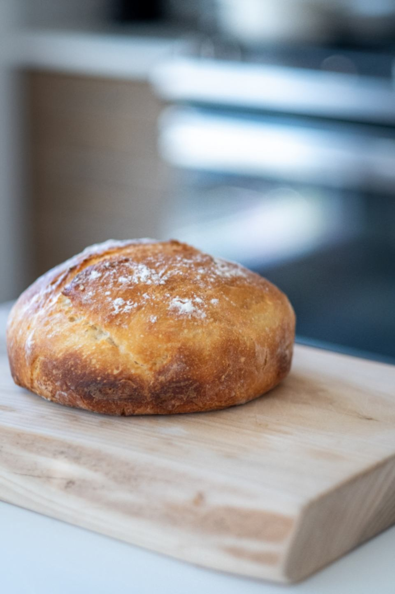

新潟県柏崎市 ハードブレッド専門店
粉の香りと、噛みしめる満足感。
粉の香りと、噛みしめる満足感。
柏崎のハードブレッド専門店
フランスパンだけじゃない。硬いパンの、新しい発見がここに。

※写真はイメージです
STRENGTH
GRAN HEARD BREADの3つの魅力
硬いパン、専門です。
フランスパン以外の“硬いパン”を専門に扱う、この地域では珍しい存在。噛みしめるたびに広がる小麦の風味を、じっくり味わっていただけます。
惣菜系から甘い系まで、幅広く。
食事に添える一本から、おやつのクイニーアマン、変わり種のサンドまで。棚には毎日さまざまな表情のパンが並びます。
おしゃれで、落ち着く店内。
パンを選ぶひとときも心地よく過ごせるよう整えられた店内。訪れたお客様からも静かな好評をいただいています。
VOICE
お客様の声
はじめてハードブレッドを食べたお客様
フランスパン以外の硬いパンにはあまり馴染みがなかったのですが、食べてみると新しい発見でした。
甘い系がお好みのお客様
チョコ入りのハードパンは、外はパリッと、中はもちっと。小麦の香りがしっかり感じられて驚きました。
お子様連れでご来店のお客様
子供も「美味しー」と喜んで食べていました。家族みんなで楽しめるパン屋さんです。
ACCESS
アクセス
営業時間や完売状況はInstagramまたは店頭にてご確認いただくか、Googleマップのクチコミもあわせてご覧ください。